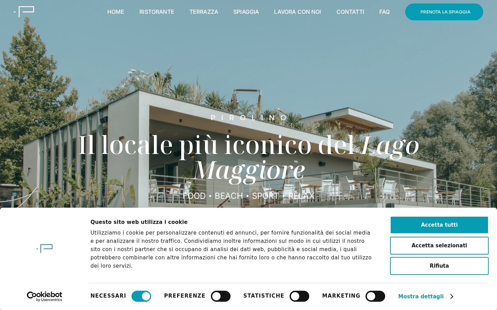
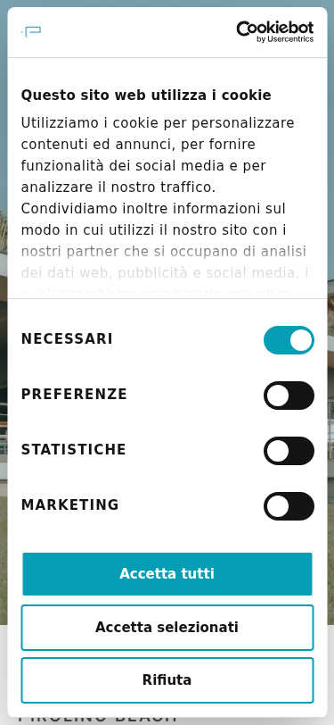

Il sito si apre e le pagine principali funzionano. Però mancano le pagine della Privacy Policy e dei Cookie, ci sono errori tecnici che impediscono il caricamento corretto dei caratteri, e la mappa di navigazione per Google (sitemap) punta al protocollo sbagliato. Sono cose che vanno sistemate, sia per la conformità alla legge sulla privacy (GDPR) sia per farsi trovare meglio su Google.
Il sito raccoglie dati personali (modulo candidature con nome, email, telefono e curriculum) e usa strumenti di tracciamento (Google Analytics, Facebook Pixel), ma la pagina con l’informativa sulla privacy non esiste. Cliccando sul link si finisce su una pagina di errore. È un obbligo di legge (GDPR) avere un’informativa privacy raggiungibile e completa.

Come per la privacy, anche la pagina che spiega quali cookie usa il sito dà errore 404. Il banner dei cookie (Cookiebot) funziona e appare correttamente, ma il link “Cookie Policy” nel piè di pagina non porta da nessuna parte.
In fondo al sito c’è scritto “Cookie Policy | Privacy Policy” ma sono solo testo, non link cliccabili. Un visitatore non può raggiungerli. Anche nel modulo candidature c’è la spunta “Accetto la Privacy Policy” ma non c’è modo di leggerla.
Il sistema Cookiebot è installato e il banner appare correttamente alla prima visita, con le opzioni per accettare o rifiutare i cookie. Questo è un buon punto di partenza.
Ogni pagina ha un titolo chiaro e una descrizione pensata per Google. Ad esempio: “Ristorante – Pirolino Beach, piatti e pizza sul Lago Maggiore”. Questo aiuta a comparire nei risultati di ricerca con un testo invitante.
Quando qualcuno condivide il sito su Facebook o WhatsApp, appare un’anteprima con titolo, descrizione e immagine. I dati Open Graph sono configurati correttamente.
La mappa che dice a Google quali pagine esistono usa indirizzi che iniziano con “http” invece di “https”. È come dare a Google un indirizzo vecchio: funziona, ma crea confusione e può rallentare l’indicizzazione.
Le foto del ristorante, della spiaggia e della terrazza non hanno una descrizione testuale (testo alternativo). Questo significa che Google non sa cosa rappresentano, e chi usa lettori per ipovedenti non riesce a capire il contenuto. Nomi come “IMG_1129” o “13-b” non dicono nulla.
Il sito non comunica a Google in formato strutturato che è un ristorante, con indirizzo, orari e telefono. Aggiungere questi dati (schema LocalBusiness) aiuterebbe a comparire nelle ricerche locali tipo “ristorante Lago Maggiore” con orari, indirizzo e voto direttamente nei risultati.
Nel menu c’è la voce “FAQ” ma il link porta a una pagina di errore 404. Le domande frequenti esistono nella pagina Contatti, ma non hanno una pagina dedicata. Una sezione FAQ ben fatta con i dati strutturati potrebbe comparire direttamente nei risultati di Google.
Ci sono errori che impediscono il caricamento dei font (i caratteri tipografici). Il sito cerca di caricarli con il protocollo non sicuro (http) invece di quello sicuro (https), e il browser li blocca. Risultato: il testo potrebbe apparire con un carattere diverso da quello previsto dal design.
La connessione è protetta con certificato SSL. Il lucchetto verde appare nel browser. Bene.
Il server risponde in meno di un decimo di secondo (TTFB 64ms). La pagina si carica in circa 3 secondi, che è nella norma per un sito con molte immagini.
Il sito si adatta correttamente agli schermi dei telefoni. La navigazione funziona e i contenuti sono leggibili.

| Campo | Valore |
|---|---|
| Target URL | https://pirolinobeach.it |
| IP | 35.214.150.229 |
| Server | nginx |
| CMS | WordPress + Elementor Pro |
| Tema | Niemeyer (Qode Interactive) |
| SEO Plugin | Yoast SEO |
| Cookie | Cookiebot (3fcce38f-152e-4e20-812f-9b33f81ea7db) |
| Analytics | GA4 (G-Q44P2L5DYD) + Facebook Pixel (3571703469792486) |
| SSL | OK (HTTPS attivo) |
| TTFB | 64ms |
| Page size | 114 KB (HTML) |
| Scenario | Audit |
| Score | 60/100 |